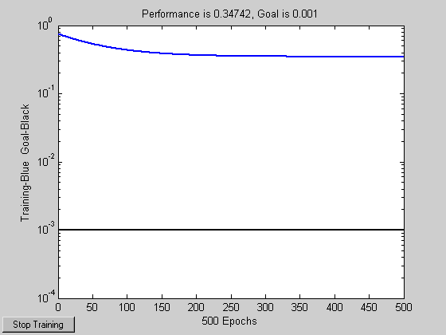

Linearly Dependent Problem
A linear neuron is trained to find the minimum error solution for a problem with linearly dependent input vectors. If a linear dependence in input vectors is not matched in the target vectors, the problem is nonlinear and does not have a zero error linear solution.
Copyright 1992-2002 The MathWorks, Inc. $Revision: 1.12 $ $Date: 2002/03/29 19:36:15 $
P defines three 2-element input patterns (column vectors). Note that 0.5 times the sum of (column) vectors 1 and 3 results in vector 2. This is called linear dependence.
P = [ 1.0 2.0 3.0; ...
4.0 5.0 6.0];T defines an associated 1-element target (column vectors). Note that 0.5 times the sum of -1.0 and 0.5 does not equal 1.0. Because the linear dependence in P is not matched in T this problem is nonlinear and does not have a zero error linear solution.
T = [0.5 1.0 -1.0];
MAXLINLR finds the fastest stable learning rate for TRAINWH. NEWLIN creates a linear neuron. NEWLIN takes these arguments: 1) Rx2 matrix of min and max values for R input elements, 2) Number of elements in the output vector, 3) Input delay vector, and 4) Learning rate.
maxlr = maxlinlr(P,'bias');
net = newlin([0 10;0 10],1,[0],maxlr);TRAIN uses the Widrow-Hoff rule to train linear networks by default. We will display each 50 epochs and train for a maximum of 500 epochs.
net.trainParam.show = 50; % Frequency of progress displays (in epochs). net.trainParam.epochs = 500; % Maximum number of epochs to train. net.trainParam.goal = 0.001; % Sum-squared error goal.
Now the network is trained on the inputs P and targets T. Note that, due to the linear dependence between input vectors, the problem did not reach the error goal represented by the black line.
[net,tr] = train(net,P,T);
TRAINB, Epoch 0/500, MSE 0.75/0.001. TRAINB, Epoch 50/500, MSE 0.53429/0.001. TRAINB, Epoch 100/500, MSE 0.434609/0.001. TRAINB, Epoch 150/500, MSE 0.388044/0.001. TRAINB, Epoch 200/500, MSE 0.366292/0.001. TRAINB, Epoch 250/500, MSE 0.35613/0.001. TRAINB, Epoch 300/500, MSE 0.351384/0.001. TRAINB, Epoch 350/500, MSE 0.349166/0.001. TRAINB, Epoch 400/500, MSE 0.34813/0.001. TRAINB, Epoch 450/500, MSE 0.347646/0.001. TRAINB, Epoch 500/500, MSE 0.34742/0.001. TRAINB, Maximum epoch reached.
We can now test the associator with one of the original inputs, [1; 4] , and see if it returns the target, 0.5. The result is not 0.5 as the linear network could not fit the nonlinear problem caused by the linear dependence between input vectors.
p = [1.0; 4]; a = sim(net,p)
a =
0.8971